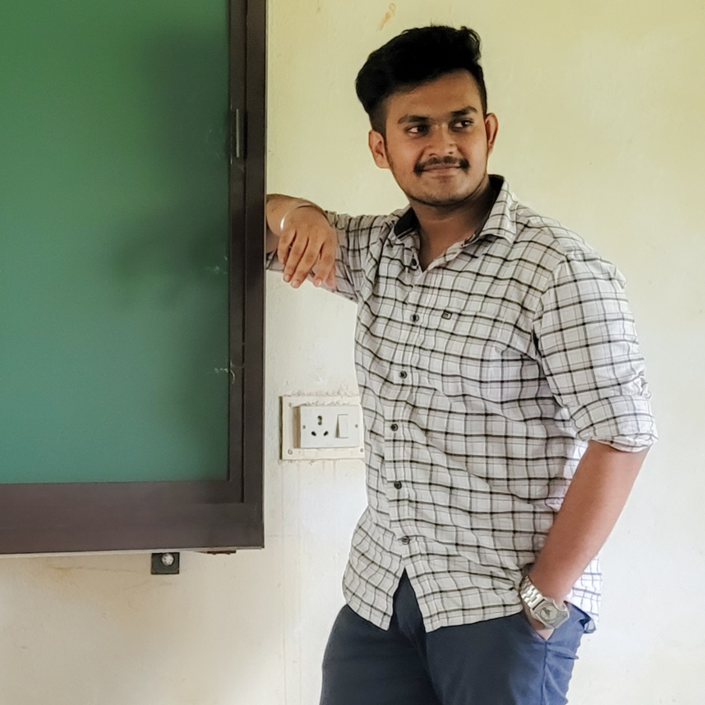

07 · Resume
Full Resume
Prefer a classic, printable format? Preview the full resume below or download the PDF to share with recruiters.
⬇ Download Resume (PDF)

Aspiring Data Analyst turning raw data into meaningful insights — with hands-on skills in Python, SQL, Power BI and Advanced Excel.
| field | value |
|---|---|
| name | SANTAN N. S. PERUMALLA |
| role | Data Analyst (Fresher) |
| core_skills | Python, SQL, Power BI, Excel |
| projects_completed | 4 |
| location | Vijayawada, IN |
| availability | Immediate |
Aspiring Data Analyst with hands-on skills in Python, SQL, Power BI, Advanced Excel, and EDA. Seeking an entry-level opportunity to apply analytical skills, turn data into actionable insights, and support data-driven business decisions while continuously developing expertise in analytics and visualization.
My work spans building relational databases, cleaning and exploring datasets, and designing interactive Power BI dashboards that turn numbers into decisions — backed by internship exposure in networking and embedded systems.
Prefer a classic, printable format? Preview the full resume below or download the PDF to share with recruiters.
⬇ Download Resume (PDF)